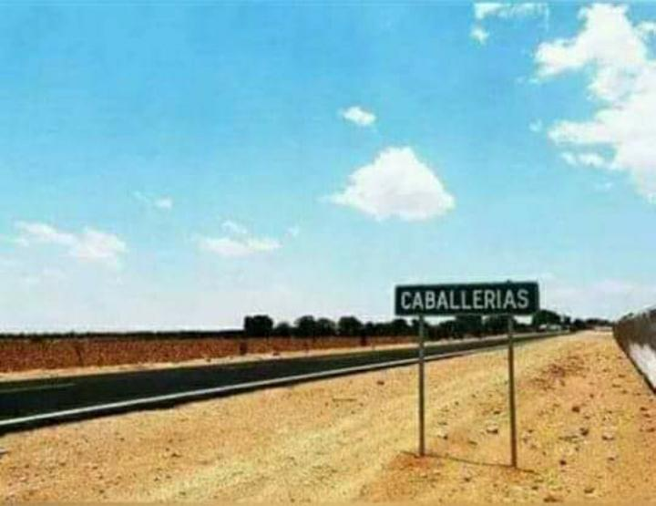

caballerias_villa_hidalgo_paginaweb1
CABALLERIAS.
Tierra de migrantes.

Caballerias es un pequeño pueblo del
municipio de Villa Hidalgo.
Con gente honesta y trabajadora.
Lleno de costumbres y tradiciones.
Conoce Caballerias:
12 de diciembre..
Tradiciones y costumbres.
Paisajes.
Su gente.